Estimated time needed: 20 minutes
In this lab, you will use the MySQL command line interface (CLI) to create a database and to restore the structure and contents of tables. Then you will learn how to explore and query tables. Finally, you will learn how to dump/backup tables from database.
In this lab, you will use MySQL. MySQL is a Relational Database Management System (RDBMS) designed to efficiently store, manipulate, and retrieve data.

To complete this lab you will utilize the MySQL relational database service available as part of the IBM Skills Network Labs (SN Labs) Cloud IDE. SN Labs is a virtual lab environment used in this course.
The Sakila database used in this lab comes from the following source: https://dev.mysql.com/doc/sakila/en/ under New BSD license [Copyright 2021 - Oracle Corporation].
You will use a modified version of the database for the lab, so to follow the lab instructions successfully please use the database provided with the lab, rather than the database from the original source.
The following entity relationship diagram (ERD) shows the schema of the Sakila database:
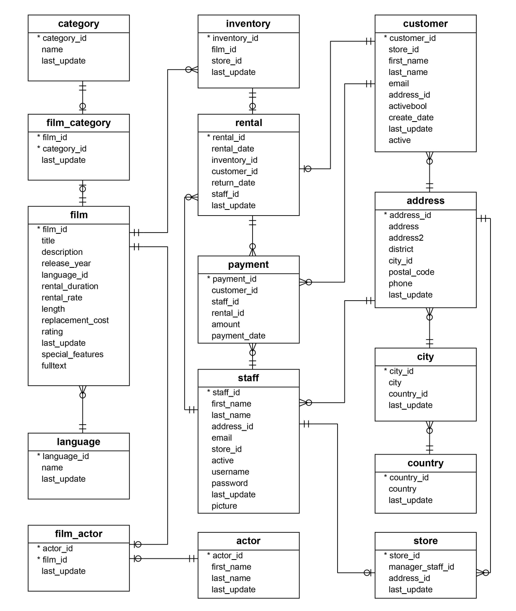After completing this lab, you will be able to use the MySQL command line to:
In this exercise through different tasks, you will use the MySQL command line interface (CLI) to create a database and to restore the structure and contents of tables. Then you will learn how to explore and query tables. Finally, you will learn how to dump/backup tables from database.
Go to Terminal > New Terminal to open a terminal from the side by side launched Cloud IDE.
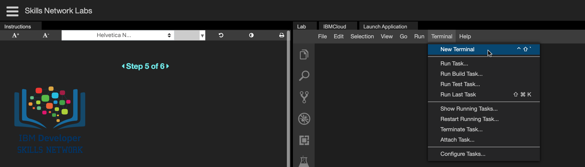
Copy the command below by clicking on the little copy button on the bottom right of the codeblock and then paste it into the terminal using Ctrl + V (Mac: ⌘ + V) to fetch the sakila_mysql_dump.sql file to the Cloud IDE.
awk
wget https://cf-courses-data.s3.us.cloud-object-storage.appdomain.cloud/IBM-DB0110EN-SkillsNetwork/datasets/sakila/sakila_mysql_dump.sql
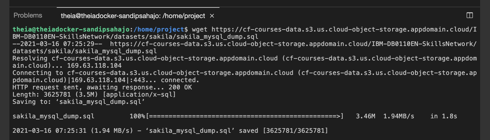
Start the MySQL service session in the Cloud IDE using the command below in the terminal:
ebnf
start_mysql
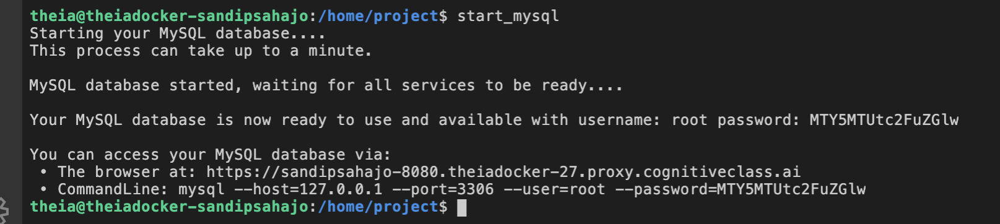
Initiate the mysql command prompt session within MySQL service session using the command below in the terminal:
routeros
mysql --host=127.0.0.1 --port=3306 --user=root --password
When prompted, enter the password that was displayed when MySQL started up, as shown in the screenshot below.
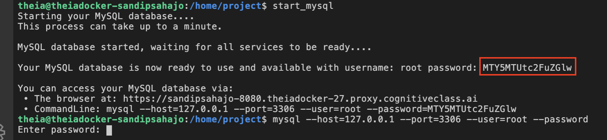
Please note, you won't be able to see your password when typing it in. Not to worry, this is expected!
Create a new database sakila using the command below in the terminal and proceed to Task B:
n1ql
create database sakila;
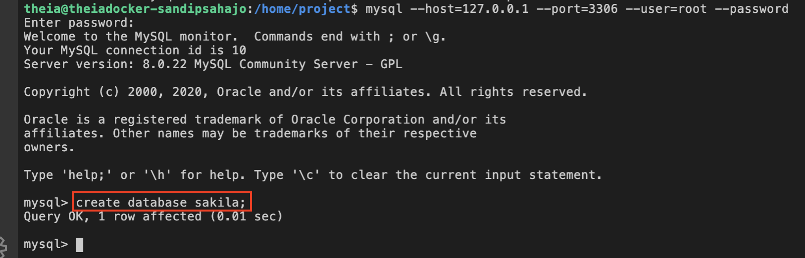
To use the newly created empty sakila database, use the command below in the terminal:
abnf
use sakila;
Restore the sakila mysql dump file (containing the sakila database table definitions and data) to the newly created empty sakila database. A dump file is a text file that contains the data from a database in the form of SQL statements. This file can be imported using the command line with the following command:
abnf
source sakila_mysql_dump.sql;
Note: You can use the source command to restore the database dump file within the mysql command prompt. To restore the database dump file outside of the mysql command prompt, you can use the
mysql --host=127.0.0.1 --port=3306 --user=root --password sakila < sakila_mysql_dump.sqlcommand after quitting the mysql command prompt session with command\q.
To list all the tables names from the sakila database, use the command below in the terminal:
pgsql
SHOW FULL TABLES WHERE table_type = 'BASE TABLE';
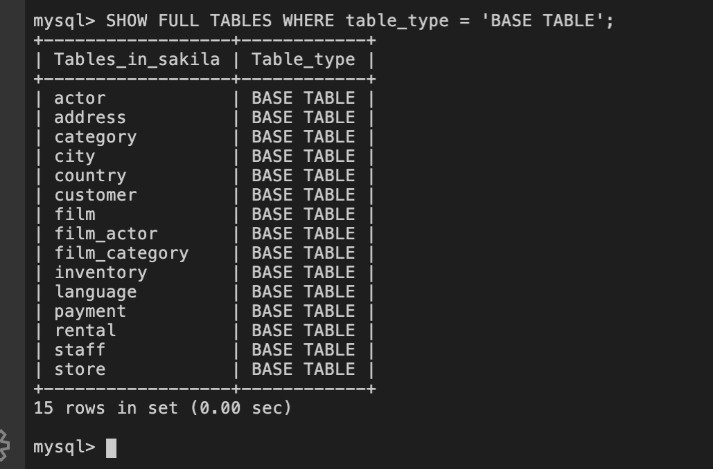
The Table_type for these tables is BASE TABLE. BASE TABLE means that it is a table as opposed to a view (VIEW) or an INFORMATION_SCHEMA view (SYSTEM VIEW).
Explore the structure of the staff table using the command below in the terminal:
abnf
DESCRIBE staff;
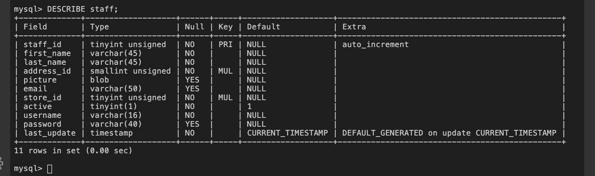
To understand the output, see the following table:
| Column Name | Definition |
|---|---|
| Field | Name of the column. |
| Type | Data type of the column. |
| Null | Displays YES if column can contain NULL values and NO if not. Notice how the primary key displays NO. |
| Key | Displays the value PRI if the column is a primary key, UNI if the column is a unique key, and MUL if the column is a non-unique index in which one value can appear multiple times. If there is no value displayed, then the column isn't indexed or it's indexed as a secondary column. Please note, that if more than one of these values applies to the column, the value that appears will be displayed based on the following order: PRI, UNI, and MUL. |
| Default | The default value of the column. If the column's value has specifically been set as NULL, then the value that appears will be NULL. |
| Extra | Any additional information about a column. |
Now retrieve all the records from the staff table using the command below in the terminal:
n1ql
SELECT * FROM staff;
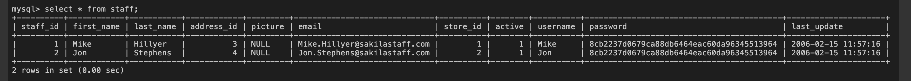
Quit the MySQL command prompt session using the command below in the terminal and proceed to Task D:
css
\q
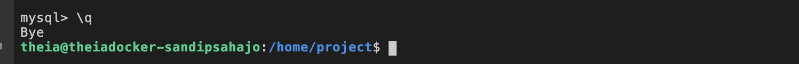
Finally, dump/backup the staff table from the database using the command below in the terminal:
routeros
mysqldump --host=127.0.0.1 --port=3306 --user=root --password sakila staff > sakila_staff_mysql_dump.sql
This command will backup the staff table from the sakila database into a file called sakila_staff_mysql_dump.sql.
Enter your MySQL service session password.
To view the contents of the dump file within the terminal, use the command below:
autohotkey
cat sakila_staff_mysql_dump.sql
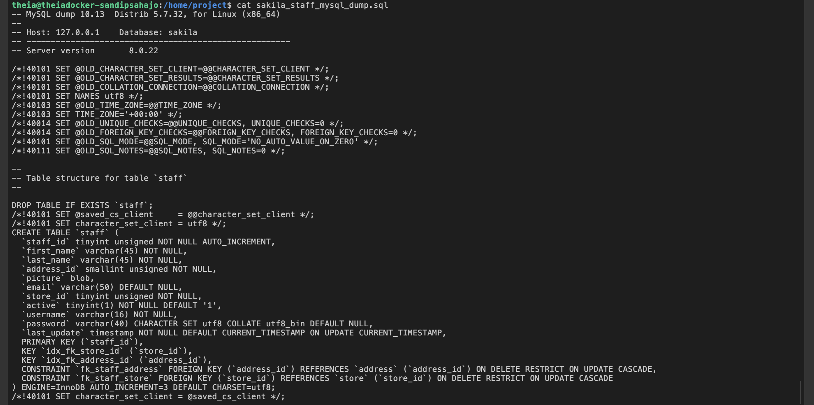
| Date | Version | Changed by | Change Description |
|---|---|---|---|
| 2021-03-15 | 1.0 | Sandip Saha Joy | Created initial version |
| 2021-10-18 | 1.1 | Kathy An | Updated lab instructions |